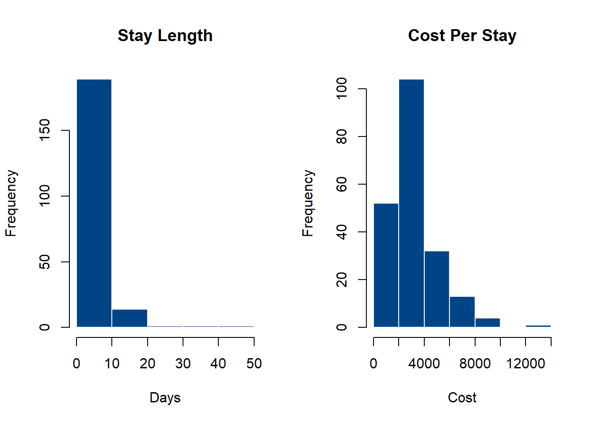
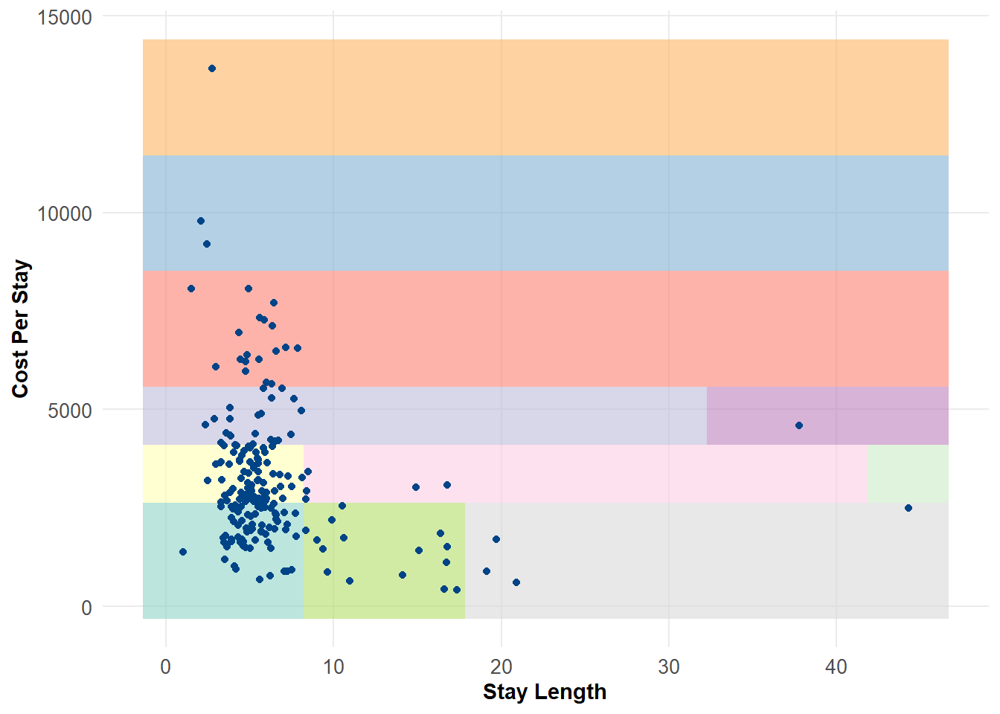
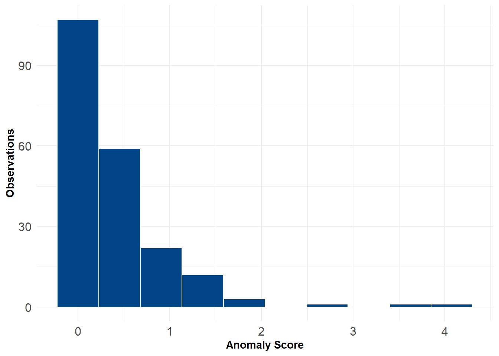

This is the third part of a 3-part series. In the first two posts I described how I built a principal components analysis anomaly detector and a k-nearest neighbors anomaly detector as components for a ensemble model. This third post will discuss the last piece, which is a histogram-based anomaly detector.
“Soft” principal components anomaly detector
K-nearest neighbors anomaly detector
Isolation forest or histogram-based anomaly detector
Building a Histogram-Based Outlier Detector
Defining sub-space density
The core of the idea behind a histogram-based outlier detector is that it is a method to efficiently explore subspaces of the data by binning observations into discrete groups, then weighting each bin inversely by the number of observations (more on this in a moment). To start, we can provide a quick example showing how we can use histograms to partition the data into bins. Below, I create two histograms for the features representing stay length and average cost per-stay.
Code
# define breaksh1 <-hist(df$stay_len, breaks =5, plot =FALSE)h2 <-hist(df$cost_per_stay, breaks =5, plot =FALSE)# append to dataframehdf <- df %>%mutate(d1 =findInterval(stay_len, h1$breaks),d2 =findInterval(cost_per_stay, h2$breaks),space =paste0(d1,"-",d2))# Create a data frame with a grid of values for the predictor variablesgrid <-expand.grid(stay_len =seq(min(hdf$stay_len), max(hdf$stay_len), length.out =10),cost_per_stay =seq(min(hdf$cost_per_stay), max(hdf$cost_per_stay), length.out =10)) %>%mutate(d1 =findInterval(stay_len, h1$breaks),d2 =findInterval(cost_per_stay, h2$breaks),space =paste0(d1,"-",d2)) %>%mutate(space =ifelse(space %in% hdf$space, space, NA)) %>%fill(space)
If we plot each of these histograms, we can observe that most values concentrate in a few bins, while a small number of values are in more sparsely-populated bins. Obviously this shows us that the majority of stay lengths are between 0-10 days, and the average cost per-stay is around $4,000.
Code
par(mfrow=c(1,2))plot(h1, main ="Stay Length", xlab ="Days", col ='#004488', border ='white')plot(h2, main ="Cost Per Stay", xlab ="Cost", col ='#004488', border ='white')

A histogram’s bins are proportional to the number of observations.
We can plot this in 2 dimensions to see how the feature space distribution is subdivided based on histogram bins. As we would expect, the majority of observations fall into a few regions, while potential outliers exist in much more sparsely populated bins. This is actually fairly similar to a decision tree, where we classify observations based on a set of rules. For example, the lone observation on the far right of the plot is in a region where stay_length >= 44 and cost_per_stay >= 3367 and cost_per_stay <= 4837.
Code
ggplot() +geom_tile(data = grid, aes(x = stay_len, y = cost_per_stay, fill = space), alpha = .6) +geom_point(data = df, aes(x = stay_len, y = cost_per_stay), color ='#004488') +labs(x ='Stay Length', y ='Cost Per Stay') +theme_minimal() +theme(legend.position ="none") +scale_fill_brewer(palette ="Set3") +theme(axis.text =element_text(size =10),axis.title =element_text(face ="bold"),panel.grid.minor =element_blank())

2D histogram partitioning of observations. Colored regions represent different bin partitions. Note the sparse regions at the top left and lower right quadrants.
Scoring observations
With this in mind, we are essentially going to do the above, but in \(d\) dimensions (where \(d\) is the number of input features). To give each observation an anomaly score, we will follow a very simple scoring mechanism proposed by the original authors of the method where:
Which states that the histogram-based anomaly score is the sum of the log of inverse histogram densities. More simply, for each feature \(d\) we compute a histogram density, and each observation is scored based on the inverse of its bin density (Goldstein and Dengel 2012). This means observations in sparsely populated bins receive higher scores, and vice-versa. One of the trade-offs here is that we have to assume feature independence (which is a tenuous assumption in a lot of cases), but even violations of this might not be too bad.
A brief aside: choosing the optimal bin size
One challenge with this approach is that before we calculate histogram densities we need to define the number of bins for our histograms ahead of time. Now, one simple method might just be to choose a very rough rule-of-thumb (e.g. the “Sturges” rule of \(1+log2(N)\)) or to just choose a constant number like 5 or 10. A more principled way, however, would be to derive the optimal number of bins based on some properties of the input data.
There are a lot of proposed options out here, but the one that makes a lot of sense to me (and, incidentally, is also used in the pyod implementation of this function) is to iteratively fit histograms, calculate a penalized maximum likelihood estimate for each histogram \(D\), and then select the number of bins corresponding to the maximum likelihood estimate (Birgé and Rozenholc 2006). A rough R implementation of this is shown below:
# internal function: compute optimal binsopt_bins <-function(X, upper_bound =15) { epsilon =1 n <-length(X)# maximum likelihood estimate for bin maximum_likelihood <-array(0, dim =c(upper_bound -1, 1))# rule of thumb for upper boundif (is.null(upper_bound)) { upper_bound <-as.integer(sqrt(length(X))) }for (i inseq_along(1:(upper_bound -1))) { b <- i +1 histogram <-hist(X, breaks = b, plot =FALSE)$counts maximum_likelihood[i] <-sum(histogram *log(b * histogram / n + epsilon) - (b -1+log(b) ^2.5)) }return(which.max(maximum_likelihood)) }
So, running this for the first feature stay_len, we get:
opt_bins(df$stay_len)
[1] 5
Building the detector
With the issue of histogram bins out of the way, we can procede with the rest of the model. The last bit is really quite simple. For each feature \(d\) we compute the optimal number of bins (using the function we just defined above). We then build a histogram for that feature and identify which points fall within each bin. We then score each point according to the formula above, which is the log of the inverse histogram density (making outlying observations have correspondingly higher anomaly scores). The last thing we do after running this algorithm over all \(d\) features is to scale their scores (here, I use min-max normalization) and sum them together. The code to do this is below:
# run HBOSfor(d in1:d){ h <-hist(X[,d], breaks =opt_bins(X[,d]), plot =FALSE) fi <-findInterval(X[,d], h$breaks) hbos[[d]] <-log(1/h$density[fi]) }# minmax scale feature vectors hbos <-lapply(hbos, function(x){(x-min(x)) /(max(x)-min(x))})# return scorereturn(apply(do.call(cbind, hbos), 1, sum))
Running the Model
Now we’re ready to run everything. For simplicity, I wrap all this code into a single adHBOS function that contains the optimal histogram binning and the scoring (see: Section 3.1). For flagging anomalies we will just identify the highest 5% (a rough, but arguably acceptable heuristic).
X <- df[,2:7]df$anom <-adHBOS(X)df$flag <-ifelse(df$anom >=quantile(df$anom, .95),1,0)
If we look at a histogram of we see most scores are low, while the outliers are clearly visible on the right-hand side.
Code
ggplot(df) +geom_histogram(aes(x = anom), bins =10, color ='white', fill ='#004488')+labs(x ="Anomaly Score", y ="Observations") +theme_minimal() +theme(axis.text =element_text(size =12),axis.title =element_text(face ="bold"))

Histogram-based anomaly scores. More anomalous observations have higher scores
Comparing this to our earlier plot we see:
Code
ggplot() +geom_tile(data = grid, aes(x = stay_len, y = cost_per_stay, fill = space), alpha = .6) +geom_point(data = df, aes(x = stay_len, y = cost_per_stay), color ='#004488') +geom_point(data = df[df$flag ==1,], aes(x = stay_len, y = cost_per_stay, color ='#BB5566'), size =2) +labs(x ='Stay Length', y ='Cost Per Stay') +theme_minimal() +theme(legend.position ="none") +scale_fill_brewer(palette ="Set3") +theme(axis.text =element_text(size =10),axis.title =element_text(face ="bold"),panel.grid.minor =element_blank())
Plotting inliers (blue) and outliers (red) in 2D space.
As we expect, most of the observations that are flagged as outliers reside in bins with few other observations. This is pretty consistent with the other two methods we used before (PCA and KNN anomaly detectors). One specific advantage of the HBOS method is that it is very fast for even large datasets. However, with higher levels of dimensionality it is very likely that the assumption of feature independence is tenuous at best. Other methods, like the isolation forest can often perform better in higher dimensions. However, the simplicity of the method makes it easy to explain, which can be a benefit in many cases!
HBOS Anaomaly Detector: Example Function
Here’s a minimal working example of the procedure above. As we build our ensemble, we’ll come back to this function later.
Code
# Run a principal components anomaly detectoradHBOS <-function(X, ub =15){# scale input features, define list to hold scores X <-scale(X) j <-dim(X)[2] hbos <-vector("list",j)# internal function: compute optimal bins opt_bins <-function(X, upper_bound = ub) { epsilon =1 n <-length(X)# maximum likelihood estimate for bin maximum_likelihood <-array(0, dim =c(upper_bound -1, 1))# rule of thumb for upper boundif (is.null(upper_bound)) { upper_bound <-as.integer(sqrt(length(X))) }for (i inseq_along(1:(upper_bound -1))) { b <- i +1 histogram <-hist(X, breaks = b, plot =FALSE)$counts maximum_likelihood[i] <-sum(histogram *log(b * histogram / n + epsilon) - (b -1+log(b) ^2.5)) }return(which.max(maximum_likelihood)) }# run HBOSfor(j in1:j){ h <-hist(X[,j], breaks =opt_bins(X[,j]), plot =FALSE) fi <-findInterval(X[,j], h$breaks) hbos[[j]] <-log(1/h$density[fi]) }# minmax scale feature vectors hbos <-lapply(hbos, function(x){(x-min(x)) /(max(x)-min(x))})# return scorereturn(apply(do.call(cbind, hbos), 1, sum))}
References
Birgé, Lucien, and Yves Rozenholc. 2006. “How Many Bins Should Be Put in a Regular Histogram.”ESAIM: Probability and Statistics 10: 24–45.
Goldstein, Markus, and Andreas Dengel. 2012. “Histogram-Based Outlier Score (Hbos): A Fast Unsupervised Anomaly Detection Algorithm.”KI-2012: Poster and Demo Track 1: 59–63.